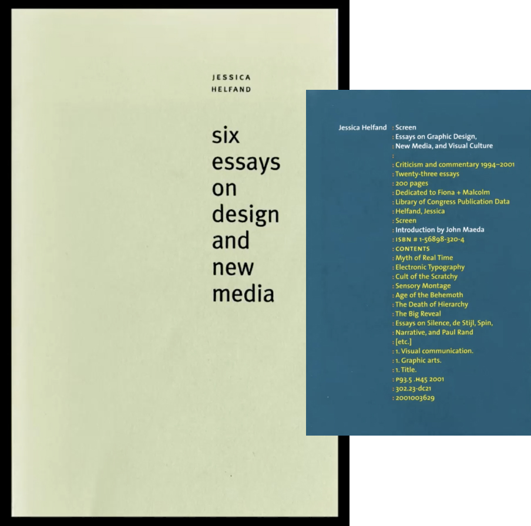
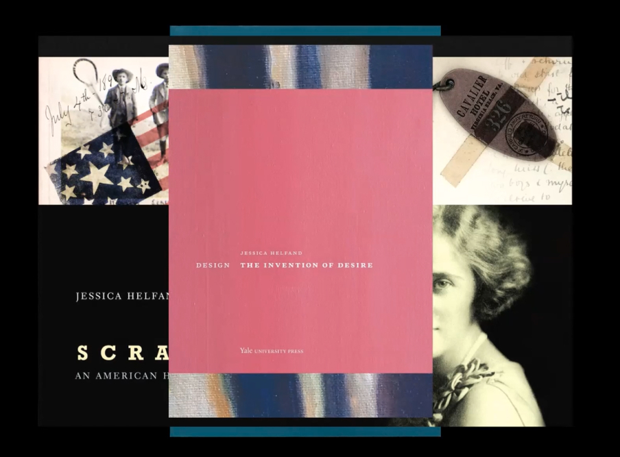
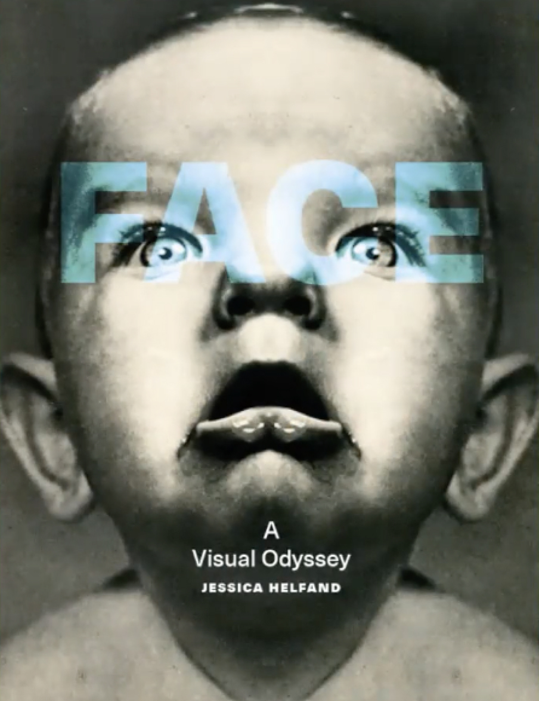
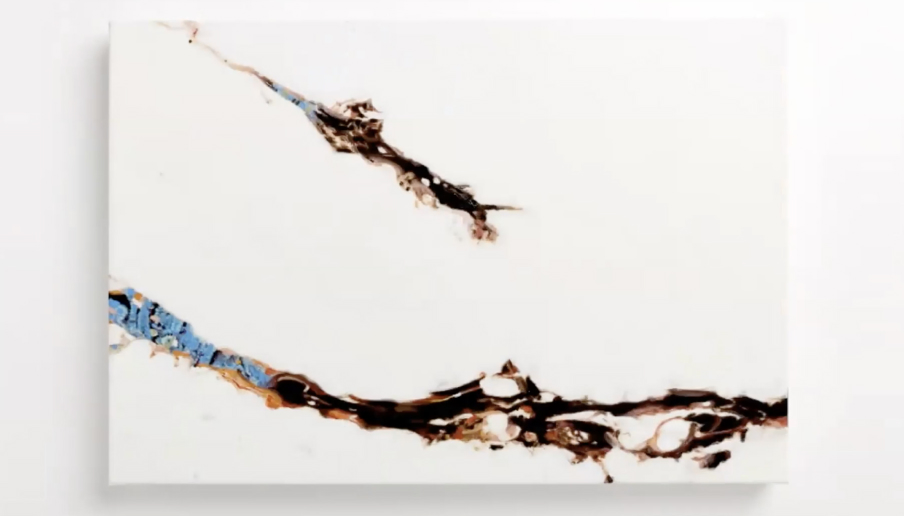
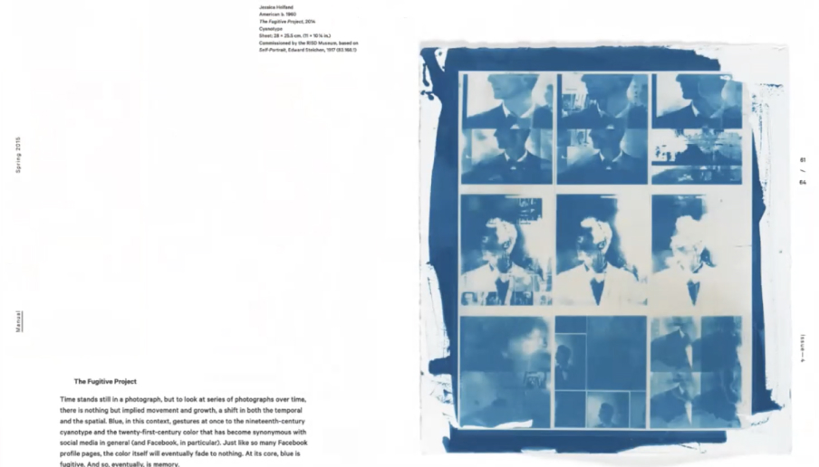
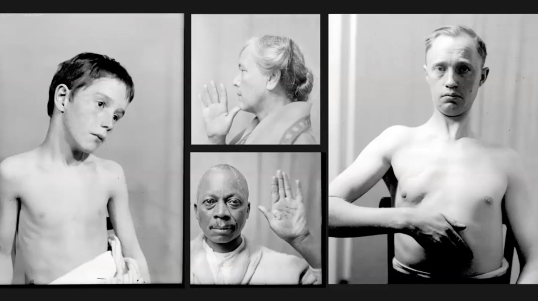
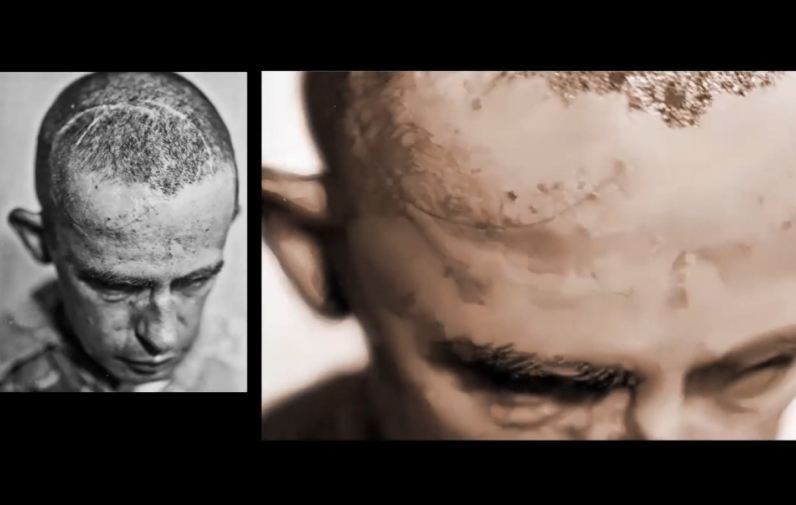
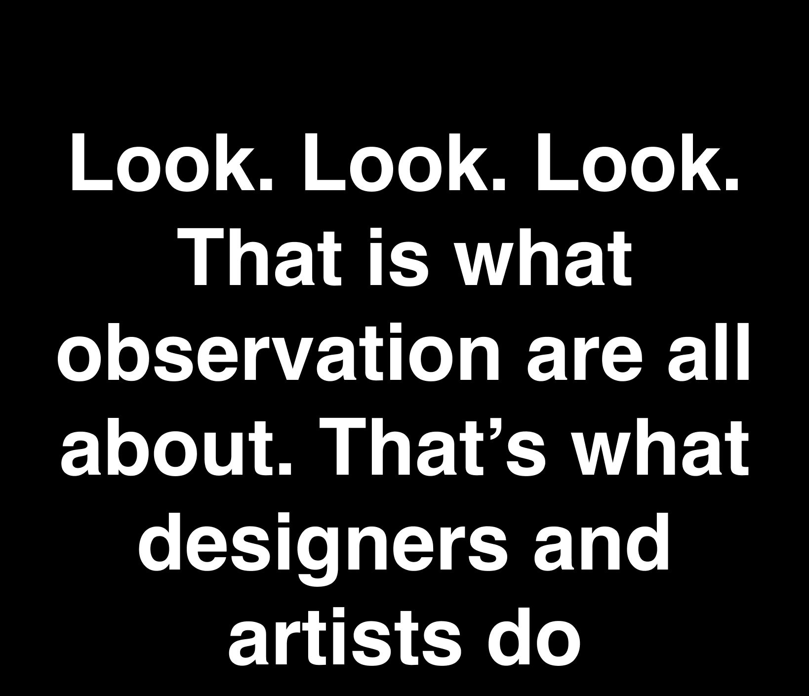

Jessica Helfand, a founding editor of Design Observer, is an award-winning graphic designer and writer. A former contributing editor and columnist for Print, Eye and Communications Arts magazine, she is a member of Alliance Graphique Internationale and a recent laureate of the Art Director’s Hall of Fame. Jessica received both her BA and MFA from Yale University where she has taught since 1994. In 2013, she won the AIGA medal.
“Looking at the screen as a lens, as a stage, as a platform, as a filter, as a form of entertainment and a platform for communication.”
“Think about design not in terms of typogrpahy, communication but in terms of forms of expression that are evocations of who we are as people”
“Look at humanity through our faces.The face you have is what you are given.”
“The most important thing for young makers, whether you are UI/UX designers, painters, or poet, it is the idea that you interogate your assumptions, you push back, you think broadly, you feel deeply, you keep a sketch book, and you keep on moving.”
“When you do research, you learned not what these people tell us but what you learn, what your eyes tell you. Start to pay attention to pattern recognition. What is it that your eyes are drawn to. What is it that you are thinking about.”
“We all look the same on the inside, its what we are on the inside and what we do with it that matters.”
“Every single detail is something that you are looking at.”
